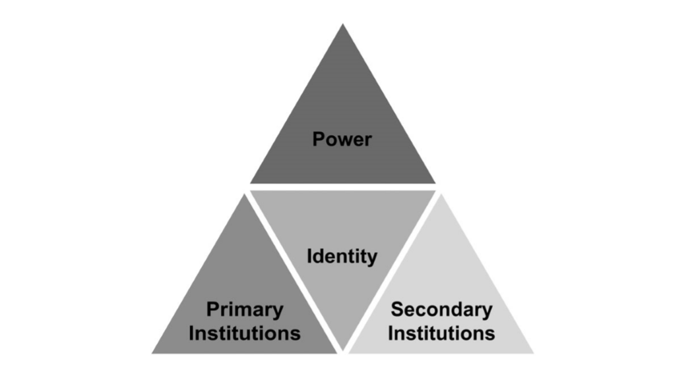
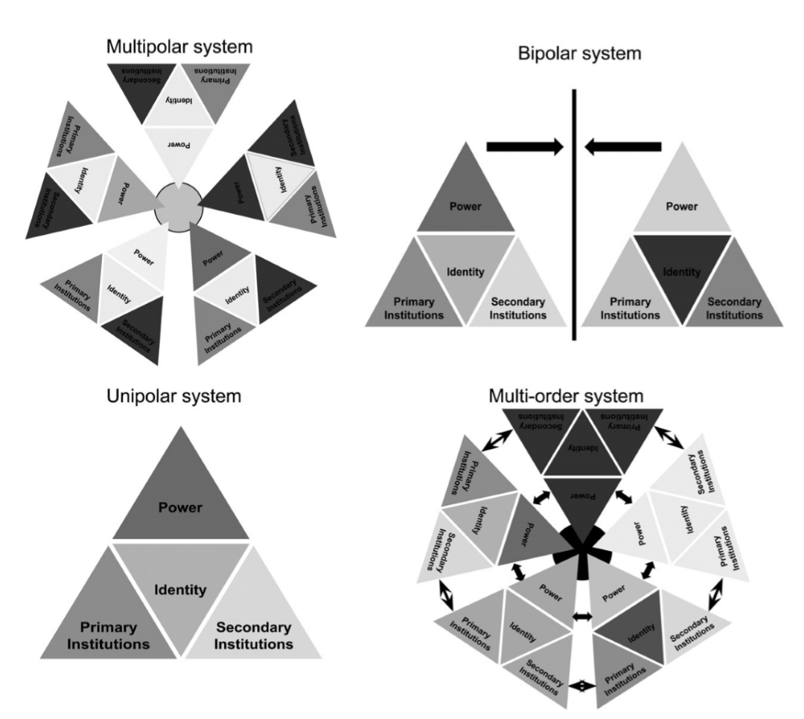

收录于合集

作品简介
【作者】 Trine Flockhart 目前是南丹麦大学（University of Southern Denmark）政治学系国际关系教授。她的研究主题主要集中在国际秩序与自由主义国际秩序的危机、秩序转型、欧洲安全（特别是北约与跨大西洋关系）、建构主义、规范与社会身份理论等方面。她在《当代安全政策》（2016）上发表的文章《即将到来的多元秩序世界》（The Coming Multi-Order World）获得了2017年该杂志颁发的伯纳德·布罗迪年度最佳文章奖（Bernard Brodie Prize）。
【编译】 张晋岚（中国社会科学院大学世界经济与政治研究系）
【校对】 董骁天
【审核】 李源
【排版】 梁鑫昱
【来源】 Trine Flockhart (2016) , “The coming multi-order world”.
Contemporary Security Policy, 37:1, 3-30, DOI: 10.1080/13523260.2016.1150053

期刊简介

_
_
Contemporary Security Policy （《当代安全政策》）创办于1980年，是国际冲突与安全领域历史最悠久的同行评议期刊之一，它推动了对武装冲突、干预和冲突解决等政策问题的理论研究。该期刊主要关注的研究领域包括战争与武装冲突、维持和平、解决冲突、军控与裁军、国防政策、战略文化、国际制度。根据Journal Citation Reports的数据，2018年Contemporary Security Policy的影响因子为1.574，在91个国际关系类期刊中排名33。
**即将到来的多元秩序世界
** The Coming Multi-Order World
Trine Flockhart
内容提要
当前的国际体系正朝着一种全新形式转变，即 多元秩序体系（multi-order system） 。多元秩序叙事与目前三种描述未来全球秩序的叙事相异，它们分别是 多极叙事（multipolar narrative）、多伙伴叙事（multi- partner narrative）与多元文化叙事（multi-culture narrative） 。作者认为，尽管每一种叙事都指向一个看似合理的未来，但都没有完全精准地掌握它。作者运用英国学派的概念，例如秩序、国际社会、国际体系、首要制度（primary institutions）与次要制度（secondary institutions），揭示了未来国际体系是由嵌套在一个整体国际体系内的若干秩序（或国际社会）所构成的概念。在即将到来的多元秩序世界中，自由秩序（liberal order）将继续存在，甚至可能在内部得到强化，但其全球影响力将成为过去时。需要注意的是，未来的多元秩序世界将是完全不同的，因此作者认为需要新的思维和新的制度，并在权力和原则上接受多样性。
本文分为以下五个部分 ：1）第一部分简要概述了关于正在生成的全球秩序的三种相互竞争叙事。2) 第二部分将讨论概念性问题：什么是秩序、秩序是如何以及在何处产生并再生。3）第三部分：作者提出一种理想型国际秩序，这一秩序促使作者将重点放在国际秩序或国际社会的组成部分与构建上。4）第四部分将讨论国际体系的特征及其与国际社会的关系，以及该体系内的秩序或社会的特征如何影响体系。5）第五部分将论证当前的国际体系的特征与过去多极化、两极化与单极化的国际体系的相异之处。此外，作者还将论证下一个国际体系很可能是由多个具有重叠性、发散性特征的秩序组成，这些秩序嵌套在一个作为整体的国际体系中，在这一体系内，一个复杂的秩序间关系网络将决定未来多元秩序世界的特征。
最后，文章的结论是，未来的挑战将是 维护自由主义国际秩序（liberal international order） ，并塑造多种不同的新型关系来管理即将到来的多元秩序的世界。
文章导读
01
新兴秩序（emerging order）叙事
有关不断变化的战略环境与新兴全球秩序的文献卷帙繁浩，但本文并非旨在对这一领域的文献开展全面性研究。 作者将有关新兴全球秩序的既有文献大致分为三类：多极的未来（multipolar future）、多伙伴的未来（multi-partner future）与多元文化的未来（multi-culture future）。 这三种叙事都具有一个共同点，即三者都主要关注当前自由主义国际秩序的作用与未来前景，它们都预期了一个由新兴（大国）力量所组成的更具多元化的国际体系。 然而，三种叙事在一些重要的问题上存在分歧，尤其是在秩序是如何产生与维持的问题上。 这导致了它们对当前自由秩序的未来前景以及对这一秩序的现任领导者美国将扮演的角色有着显著相异的解释。 作者认为，多极叙事是对过去的回顾，多伙伴叙事是对现在向未来的的延伸，而多元文化叙事则是对一个完全不同的未来的展望。
1. 多极的未来
第一种叙事可能是媒体和政界最常见的叙事，并得到大量学术文献的支持。这类叙事表明，我们目前正在见证均势（balance of power）政治的回归，而这一现象曾是19世纪和20世纪初多极体系的特征。 这一叙事主要如下展开：随着新兴力量的崛起，单极势头终结，取而代之的将是全球多极化趋势，而在多极化背景下，中美关系将是最重要的一组关系。该叙事强调物质能力（特别是军事与经济实力），同时也强调军事实力取决于经济实力。 这形成了一个具有说服力的论点，即随着崛起大国经济实力的提升，它们也很可能增强其军事实力。由于这一叙事强调经济实力的重要性以及与军事实力的关系，中国的崛起以及中国作为第二大经济体的地位受到广泛的关注。
这一叙事根植于现实主义理论，强调对国家利益和物质能力的追求，并将无政府状态和均势视为国际体系中关键的排序原则（key ordering principles），这一国际体系在很大程度上被认为朝着多极化方向发展。该叙事的支持者认为，在加速变革的时代背景下，均势政治为维持秩序的“容忍水平”提供了有效的机制。然而，尽管这些支持者强调均势政治和国家利益的重要性，并且都认为多极化趋势正在形成，但他们对于美国如何应对战略环境的变化以及如何看待现有的自由秩序前景提出了不同的建议。
美国是否应该通过维持对现有盟友的承诺以制衡竞争大国的崛起，同时寻求阻止崛起的地区大国（例如俄罗斯和中国）建立地区利益范围，还是应该利用其地理位置与资源自给自足的优势，追求基于离岸平衡的战略。针对上述问题，这一叙事内部产生了分歧。
第一种情况的支持者认为，美国的首要目标应该是维持或增强其实力，并利用一切传统方式来制衡崛起国。而离岸平衡战略的支持者则认为，美国应该从其大量的军事承诺中解脱出来，同时，自冷战结束以来其所奉行的自由霸权主义（liberal hegemony）和参与的政策已被证明是一项代价高昂和适得其反的大战略，这使得美国成为政治焦点，由此在世界范围内产生了反美主义（anti- Americanism），并进一步出现了抗衡美国的现象。随着当前国际体系的变化，自由霸权主义的大战略代价可能会更加高昂，起到更加适得其反的效果。因此，离岸平衡的支持者主张克制（restraint），认为美国应该利用其有利的地理位置和强大的海军力量，专注于本国的国防与社会发展。
需要注意的是，尽管离岸平衡与制衡中国的战略有很大的不同，但是这两种对未来国际秩序的愿景（visions）都属于多极叙事的范畴，因为二者都认为新兴的战略环境是多极化的，是过去均势政治的回归，并且都反对国际政治的根本性质已经发生重大变化。
2. 多伙伴的未来
第二种叙事认为，新兴大国的崛起将影响未来的国际秩序，但这一观点对其他大国崛起将导致传统权力政治回归的说法提出了质疑。 这一叙事同自由国际主义（liberal internationalism）密切关联，特别是约翰·伊肯伯里（G. John Ikenberry）在《自由主义利维坦》（Liberal Leviathan）一书中所提倡的自由霸权主义。在决策层面，这一叙事在希拉里·克林顿（Hillary Clinton）担任美国国务卿时期得到了最清晰的阐述。她曾提出，21世纪的国际秩序将是一个“多伙伴世界”的“合作框架”，而非一个“多极世界”。
支持这一叙事立场的学者强调，美国仍然是一个经久不衰的大国，美国与其他大国的共同利益比多极化叙事所主张的要多。然而，令人感动惊讶的是，多伙伴叙事与多极化叙事在支持制衡中国方面具有许多共同点。这是因为二者都坚持认为，美国应继续承担全球责任，发挥领导作用并积极参与全球事务。值得注意的是，两者之间的相似处正在减少，因为“首要制衡者”（primacy balancers）继续强调均势与美国霸权作为关键的排序原则，然而，多伙伴叙事的支持者承认，未来的国际秩序中的排序原则将会愈发以伙伴外交为基础，而不是自由霸权主义。此外，多伙伴叙事强调了制度（institutions）、规则（rules）和多边主义（multilateralism）对维持国际秩序的重要性。
多伙伴叙事意识到国际环境的快速变化以及许多（西方）多边制度正面临着危机。但是这一叙事仍乐观地认为，现存的国际秩序在改革之后，将能够在变化后的战略环境中维持，同时，该秩序的基石理念（自由主义）所具有的软实力将继续吸引新兴民主力量。这一叙事的支持者包括了约翰·伊肯伯里和布鲁斯·琼斯（Bruce Jones）。他们认为，在可预见的未来，美国仍将是该秩序的领导者，尽管美国不得不调整其领导策略以适应新的现状。自由秩序的危机不是自由国际主义的危机，而是新兴力量的成功崛起（在许多情况下是通过自由秩序实现的）所带来的权威危机，而这些新兴力量正在侵蚀现存的秩序中的治理安排。当前，越来越多国家在这一体系中寻求话语权与权威，这意味着霸权主义的排序原则必须做出改变，即伙伴关系、软实力和（旧的）制度改革是未来维持自由秩序的前进方向。
多伙伴叙事比多极化叙事更趋于乐观。其乐观主义是基于这样一种信念，即目前的自由秩序具有很强的韧性（resilience），容易调整自身并吸纳希望与该秩序结盟的崛起大国。此外，多伙伴叙事的支持者拒绝承认自由国际主义是西方特有的文化，而是认为它只是一种组织世界的方式。
3. 多元文化的未来
第三种叙事比前两种更加趋向多元化和多维化（multifaceted）。但是这种叙事很难对客观世界进行精准描述，因为它预测了一个以多元地区次体系（sub- systems）为特征的世界，且这一世界同时具有全球化、多元化与本土化的特征。 除了这一叙事的支持者之外，我们很难在一个特定的理论方法中找到这种叙事，因为这些支持者对历史和文化的特殊性更加敏感，他们认为自由主义和自由秩序是欧洲与具有欧洲血统的民族开拓的新世界所特有社会和经济条件产物。通常而言，持这一叙事的学者更倾向利用历史和文化的方法去理解发展轨迹与社会经济力量，以及强调特定的文化身份的重要性和由此产生的对政治合法性的不同看法、主权性质、国际贸易规则以及国家与社会之间的关系。
多元文化叙事中最经典的例子之一是查尔斯·库普坎（Charles Kupchan）的《没有主宰者的世界》（No One’s World）。库普坎认为，随着新兴力量的崛起，西方不仅失去了物质上的主导地位，也失去了意识形态上的主导地位。在库普坎看来，亚洲很可能是目前全球变化的主要受益者，但即便如此，任何国家、地区或模式能否主导未来世界还是值得怀疑的。新兴的国际体系将在不同阶段由多中心组成，各个中心将朝着多元化的现代性方向发展，因此未来世界将不属于任何国家，形成一个无人主宰的世界。库普坎认为西方自由秩序的发展是沿特定的现代性道路发展的结果，这一过程产生了三个最典型的特征：自由民主主义、工业资本主义与世俗民族主义（secular nationalism）。 问题是，我们不能假定发展中地区与崛起大国也同样拥有这些西方世界的特有属性（defining attributes），而这一问题将对全球层面的秩序塑造（order- making）产生重大影响。无人主宰的世界所带来的挑战是达成关于新秩序的基本规则的全球共识并实现新秩序的和平转型，然而成功的前提是必须跨越文化层面的分界线（dividing lines）。
阿米塔夫·阿查亚（Amitav Acharya）也认为，西方霸权（Western hegemony）已经走到尽头，任何单一大国的主导地位都将被终结。美国领导的秩序正在被一个“复合世界”（multiplex world）所取代。多元复杂的世界意味着两种可能的秩序模式：大国协调模式和地区世界模式。协调模式假定，大国将在管理国际秩序方面负有特殊责任，美国需要分享其权力和权威，但是仍将继续发挥关键作用。地区模式为新地区主义发挥了更大的作用，利用欧盟和东盟等区域性机构应对气候变化、人道主义援助、干预和金融合作等国际挑战。然而，要使这一模式发挥作用，地区层面的合作必须对联合国系统发挥补充性作用，反过来促使全球性制度进行改革。阿查亚认为，如果管理得当，地区可以扮演建构世界秩序的角色。
库普坎和阿查亚强调的是差异，而巴里·布赞（Barry Buzan）和乔治·劳森（George Lawson）则指出，随着权力变得更加分散，主要大国之间的意识形态差异正在缩小，因为目前几乎所有国家都实行某种形式的资本主义。然而，尽管经济融合性日益增长，但是布赞和劳森认为存在着许多不同的治理结构，这表明未来的挑战是如何在一个没有任何单个大国或大国集团主导的“去中心的全球主义”（de- centred globalism）体系中管理不同的资本主义治理模式。布赞和劳森还强调了“去中心的全球主义”的四项原则：1）无全球霸权；2）负责任的大国；3）地区化和全球化；4）共同命运意味着共同安全。如果这四项原则能够得到遵守，一个以“去中心的全球主义”为基础的新型国际社会可能能够成功管控多元一体的政治经济模式间的竞争。
这一叙事的支持者们所达成的共识是，他们都预测美国/西方霸权将会被一个更加“去中心”或多中心（polycentric）的体系所取代，并且认为西方国家（尤其是美国）需要接受并适应这样一个事实，即自由主义价值观的普世愿景只是一厢情愿。 他们都注意到一种正在形成的全球秩序，权力、纵横交错的各类关系、多种形式的国内治理和组织实践表现出的多元化与扩散性的特征。多元文化与多伙伴叙事一致认为，未来的挑战将是促进跨越分界线（dividing lines）的全球合作，以解决气候变化、犯罪、贸易、移民和军备控制等集体安全问题。但是，多元文化叙事并不乐观地认为，这种全球合作能够根据西方原则建立，也不认为新兴大国（无论何种政体）可以被吸纳进当前的自由秩序。这一叙事认为，自由秩序是一种特定的文化建构，而不仅仅是一种组织世界的方式。此外，多元文化叙事的秩序塑造原则与多伙伴叙事相似。 两者的重要区别在于，多元文化叙事并未预期到多伙伴叙事所依赖西方国家领导力的程度，同时，多元文化叙事在更大程度上强调地区制度框架和基于文化的特定治理安排，同时质疑现存的制度架构（institutional architecture）能否在日益多元化的背景下获得使其维持基本运转程度的合法性。
综上，尽管这三种叙事都抓住了当前的变化与挑战的重要特征，但预测全球秩序未来的问题在于，尽管每一种叙事都指向看似合理的未来，但它们都没有充分地捕捉到一个日新月异的世界中秩序塑造的复杂性。 如果没有对秩序本身以及秩序是如何产生与再生进行概念层面上的理解，那么上述三种叙事都将停留在对未来世界的看法上，这实际上是在没有首先阐明秩序是如何产生的情况下要求在不同的排序原则之间进行选择。因此，在接下来的部分，作者将讨论更具概念性的问题，即如何理解秩序以及秩序是如何构成和维持的。
02
国际秩序与国际社会
赫德利·布尔（Hedley Bull）撰写的关于秩序的著作可能是迄今为止有关这一话题最权威的表述。布尔对我们理解秩序做出了开创性贡献，他的“国际社会”概念和首要制度在推动秩序方面所起的作用可能会使当前关于自由主义国际秩序/国际体系变化的辩论更加清晰和具体。 布尔所定义的秩序是一种人类活动的特殊社会模式，其有助于实现三个基本且普遍的社会生活目标：生命（life）、诚信（truth）与财产权（property）。布尔作品中反复出现的一个主题是，国际政治的秩序得以实现离不开三个条件：确保安全反对暴力、遵守协议与财产稳定。 英国学派假定共同利益存在于社会生活的这些基本目标中，并认为应该建立一些规则以确保目标的实现，以及建构起使规则行之有效的制度。布尔强调，产生和维持秩序的重要制度是均势、国际法、外交、战争和大国（great powers）。诸如国际共同实践、国际组织与机制（regimes）等次要制度正是通过这些首要制度产生，并有助于实现社会生活的三个基本目标，进而产生秩序。 布尔与英国学派最重要的贡献之一是提出以下命题，即秩序存在于三个不同层次：国际体系、国际社会和世界社会（world society）。 在经典英国学派的概念辨析中， 国际体系是指两个或两个以上国家之间具有足够的交往，并且对彼此的决策有足够的影响，从而使它们（至少在一定程度上）作为一个整体的组成部分来行为。 [译者注：此“国际社会”的定义引用自赫德利·布尔：《无政府社会：世界政治中的秩序研究（第四版）》（张小明译），上海：上海人民出版社，2015年，第12页。] 另一方面， 如果一群国家意识到它们具有某些共同利益和价值观念，从而组成一个社会，即它们认为在彼此之间的关系受到一套共同规则的制约，并且一起确保共同制度的运行，那么国家社会（society of states）就形成了。 [译者注：此“国际社会”的定义引用自赫德利·布尔：《无政府社会：世界政治中的秩序研究（第四版）》（张小明译），上海：上海人民出版社，2015年，第15页。] 巴里·布赞对国际社会做出一个更为简明的定义，即国家的共有利益（shared interests）和身份的制度化，以及国家间共有规范、规则与制度的建立和维持。可见，无论更倾向于布尔还是布赞对国际社会的理解，自由主义国际秩序似乎是国际社会的教科书范例。 尽管英国学派的观点是建立在国际体系的三要素基础之上（国际体系、国际社会与世界社会），但布尔认为秩序很可能产生在国际社会层面，并且国际社会/秩序的共同利益和共同身份、规范、规则与制度是探寻秩序如何产生的场域。 这实际上是布尔对秩序定义的一个合乎逻辑的结果，因为这一定义十分重视规则和制度的作用。 接下来，本文将更深入地探讨国际社会的构成要素、国际社会与国际体系间的关系以及这两者在过去两个世纪中如何发展并紧密交织。这一讨论的起点是构建一个理想的国际社会/国际秩序模型。
03
国际秩序的理想型（ideal-types）
本文开头概述了三种叙事，每一种都指出在相同的战略背景或国际体系下，本质上相同的国际秩序所面临不同形式的变化和挑战。然而，尽管每一种叙事都提供了重要的观察结果，每一点都指向了看似可信的未来，但这三种叙事似乎都没有描述同一种现象。考虑到问题的复杂性和可供解释的经验数据的丰富性，并可能仅仅反映不同的政治和理论立场，因此，对同一现象的不同解释是完全可能的。然而，每种叙事可能都有一个有效的观点，但这就像盲人摸象，三种叙事观察到了整个变化过程中的不同部分，而全面描述这一变化过程是有难度的。因此，这一节将通过建立一个理想型的国际社会（ideal-
typical form of international society）来考察各个组成部分。
在英国学派的理论范畴中，国际社会（或国际秩序）最基本的形式可以被理解为主权国家集群（cluster）或秉持共有价值、规范和利益的国家集群，并通过若干国际制度得以体现，这些国际制度既包括了
首要制度 （非正式且通过持续的共同实践得以落实的制度）和 次要制度
（正式且具有特定管理和调节功能的制度）。首要制度传统上包括均势、外交、国际法、大国管理（power
management）与战争,但是首要制度可以涵盖的制度数量可能是无限的。一个国际社会/秩序有可能拥有很少或不完善的次要制度，这表明了国际社会低水平的宪政建设。目前国际秩序中的宪政水平是一个相对较新的概念,是美国主导的秩序所特有的制度安排。主权是由国家所组成的社会的一部分，而权力可能在国际社会内部关系的管理以及与系统内其他行动者或秩序的外部关系中发挥重要作用。最后，国际社会的内部凝聚力似乎依赖于一种共有身份（shared
identity），这种身份将部分表现为共有规范与价值观念，部分表现为国内治理安排与文化的相似性等。
因此，一个理想型的国际社会可以被认为是一群主权国家（通常）聚集在一个领导国（leading
state）周围，这一社会将由权力、身份、首要制度与次要制度来定义。 图1展示了这种理想型的国际社会或国际秩序。

Figure 1. The Ideal-type International Society
1）权力部分（power component）
。权力部分来自于秩序中有效的物质能力和资源，也许是（但并非一定是）由秩序的领导国提供的。权力部分还包括软实力。软实力来源于非物质因素，如通过稳定的身份和共有利益产生的内部凝聚力，通过魅力与合法性所产生的吸引力。
2）身份部分（identity component） 。身份来自于秩序的自我理解（self-
understanding）、核心价值以及通过共有规范和社会实践展示的愿景。身份可能根植于宗教、文化、种族和意识形态或其它显著的身份符号。身份也可能反映在国内治理安排上。
****3）首要制度部分（primary institution component）
。首要制度是以若干持久且公认的共同实践模式为特征，这些共同实践是根植于秩序成员普遍持有的价值观，并体现了规范、规则和原则相互融合。首要制度可以是布尔所界定的制度（例如外交、国际法和战争行为），但也可能是与秩序的身份（the
identity of the order）有关的持久且公认的共同实践模式。 4）次要制度部分（secondary institution
component）
。次要制度是以制度架构为特征。这一制度架构含有两个功能：第一，处理国际社会中的国家间关系；第二，建立一个组织平台，以应对共同挑战，并在秩序内部和更广泛的体系中提供公共产品。
国际社会的特征及其内外部的韧性是由上述四个部分所构成的。四个组成部分中的任意一个都可能发生变化，但是一个部分的变化可能会影响到其它部分，因为这四个组成部分是相互联系，并且至少有一定程度的相互构建（mutual
constitutiveness）。四个组成部分的不同组合和不同特征的可能性似乎具有一个广泛的变化范围。
事实上，本文所介绍的三种叙事很可能都只关注自由主义国际秩序（liberal international
order）的不同组成部分，因为变化可能发生在所有四个组成部分中。 当评估一个国家集群（a cluster of
states）是否可以称为国际社会时，我们需要提出一个中心问题，即参与国是否在维持秩序方面享有共同利益（common interest）。
如果参与国共享类似的内部/国内环境，并且能够从中获益，那么这种共有利益（shared interest）可能会更加稳固。
因此，国际秩序的韧性将取决于国际秩序成员之间有多少共同利益，以及它们在多大程度上希望加入该秩序。国际秩序的实质将取决于身份与主导价值观念，以及定义该秩序的原则与实践。
不同国际社会的可能性显然回避了不同秩序如何共存的问题，并提出了体系与社会间的关系以及不同国际秩序之间而非个别国家之间可能存在何种动态关系的问题。
04
体系与社会的关系
布尔对国际体系和国际社会的定义乍一看直接明了。 然而，这两者之间的关系并不清晰，也不容易看出体系的终点和社会的起点。 在布尔的著作中，“社会”与“体系”的区别在于，这种“体系”仅涉及国家之间的交往与一国对另一国的影响，而国际社会还涉及共同利益与价值以及共同规则与制度。另一方面，从布尔的定义观察，体系层面的秩序似乎仅限于物质互动（physical interaction）和有关互动效果的战略计算。然而，作者认为，尽管这种区别似乎是正确的，但在实践中是存在问题的，以至于艾伦·詹姆斯（Alan James）在20多年前就得出令人信服的结论，即国际体系是一个毫无意义的概念，因为没有某种程度的社会内容的相互作用，即使不是不可能，也是不重要的。 体系与社会的区分以及“国际体系”概念的效用是英国学派理论争论的问题之一。虽然体系与社会在本质（substance）和地理范围上具有重叠部分，但体系与社会之间的区别并不重要。然而，在这一情况下，自由秩序可能不再具有全球影响，也可能不再是唯一的国际社会。 因此，下述问题变得更加重要：哪些价值、规范和制度属于自由主义国际社会？哪些属于国际体系？此外，这些问题意味着国际体系和国际社会处于共存状态，并具有迄今仍未得到探究的关系。 本文认为，很难想象一个没有最低限度的社会关系（a minimum degree of social relations）的国际体系。因此，一个国际体系很可能具有一些与国际社会相似的社会属性（social attributes）。 相比于国际社会层次的社会关系与制度，国际体系层次中的社会关系与制度很可能是微不足道的。然而，正如亚历山大·温特（Alexander Wendt）所言，即便是薄弱的（thin）社会关系也会产生不同的无政府主义文化。这可能对国际体系的总体性质产生重要影响。实际上，这一观点似乎与布尔观点一致，布尔认为，国际体系中的互动可能采取合作、冲突或中立（indifference）的形式。 “国际体系”概念在表示诸如极性（polarity）这类的整体“体系”特征仍然有效。尽管体系层面的变化是罕见的，但变化偶尔会发生。一旦变化发生就很可能导致转型性变革，并在国际社会层面产生重大影响。 此外，“体系”在性质上不同于“社会”。因为国际体系的范围是全球性的，而国际社会可能以各种形式和规模出现，在这种情况下，我们必须假定美国目前在全球范围内领导的自由秩序是一个特例，而非一种普遍规律。 一个体系与若干国际社会共存的现象表明，国际社会嵌套在一个整体的国际体系内。然而，这一判断与布尔的观点并不一致，布尔认为全球秩序（作为一种条件）将与“一堆杂乱的一般性政治组织的竞争原则”不相容。但是这一主张实际上对决策者提出了高水平要求，即决策者应建立一种合作而非冲突的体系秩序（systemic order），并通过建立与全球排序原则（global ordering principles）同样重要的全球首要和次要制度，以实现同等高水平的宪政制度。 本文在接下来的部分将会对不同形式的国际体系是如何随着时间变化进行简要的历史概述。
05
国际体系与秩序的多样性
作者在本文中提出，全球秩序应该被认为是由一个国际体系层（layer）和国际社会层组成的多层结构。图2旨在展示，过去两个世纪中不同形式的国际体系以及四个国际社会的组成部分所组成的群集。三角模型中小三角形的深浅不同，暗示着权力、身份、首要制度和次要制度这四种构成要素的异同。该图表明，在过去两个世纪中，国际体系只经历了三次转型，从单极到作者认为的多元秩序体系的转型还未完成。
Figure
2. Varieties of International Systems
1. 多极体系 the multipolar system
人们普遍认为，从18世纪后期开始的国际体系是一个多极体系。直到20世纪上半叶，国际体系经历了漫长的转型过程，出现了一个新的两极体系。多极体系是全球性的，尽管这只是由于欧洲列强的殖民势力范围，使他们得以将自己的模式强加于世界其他地区。到19世纪中叶，欧洲已成为全球政治经济和帝国主义国际社会（imperial
international
society）的核心地区。这意味着，国际体系和国际社会重叠度高，以至于很难区分两者。该体系是多极的，因为它由两个以上全球性大国组成，而国际社会是以共有的欧洲身份（shared
European identity）为特征。
显然，多极体系中的国际社会在19世纪经历了重要变化。共有的欧洲身份遭遇新兴国家身份的挑战，尽管外交和大国管理是自“维也纳协调”（Concert of
Vienna）以来最普遍的首要制度，但是一旦民族主义导致德国和意大利的统一，这些制度将让位于以均势和战争占支配地位的首要制度。
欧洲的国际社会并不是一个以厚的（thick）首要和次要制度为特征的社会，社会成员之间的共有身份（shared
identity）是建立在相对薄弱的基础上，这种身份也没有通过类似的国内治理安排得到支持。这一秩序中的四个组成部分在发展过程中频频遭挫（如19世纪中期革命的失败和民族主义的崛起），加之次要制度的缓慢发展以及法西斯主义和纳粹主义的崛起，最终导致了该秩序的崩溃。
2. 两极体系 the bipolar system
两极世界也是由一个整体的国际体系和两个国际社会组成的多层次体系（multilayered system）。
在冷战的战略环境中，这两个国际社会基本上处于独立的（self-
contained）状态，通常被称为“集团”（blocs）。这一体系是两极的，因为它只有两个主要大国。这两个国家都比其他国家强大得多，因为被称为超级大国。这两个超级大国之间的关系是以意识形态为基础的对立身份，以广泛的联盟和军备竞赛为基础的权力斗争。然而，这两个超级大国之间塑造秩序的首要和次要制度的规模有限，并且这些制度被以非建设性的方式加以利用。例如，冷战时期的均势被称为恐怖平衡（balance
of
terror），外交关系被用于间谍、政治宣传和颠覆等活动，或者美苏双方行使联合国安理会中的否决权致使外交关系受阻。在此期间发展起来的许多次要制度主要被用于各自秩序内部（非两个秩序间）的秩序塑造工作。直到美苏经历了古巴导弹危机事件之后，双方才建立起有限的次要制度，即通过构建更直接的外交关系、双边热线（hot-
line）和一些列军控谈判，以弥合两个集团之间的分歧。 此外，两个超级大国也是各自集团或国际社会的主导力量。
在美国领导的秩序中，首要制度为合作、多边主义和谈判。这一特点体现在布雷顿森林体系、北约和与一些东南亚国家双边关系的建立。尽管苏联领导的国际社会的首要制度是以集中决策与集体行动为基础，但是在苏联领导的秩序中也有类似的表现。这体现在次要制度方面，例如经济互助委员会、华沙条约以及与第三世界附庸国（client
states）的各种双边关系。另一方面，在美国领导的秩序中，其致力于把早前基于民族主义、殖民主义和欧洲身份的身份改变为基于自由贸易、法治、资本主义和自由的西方身份。同样地，苏联也致力于将共同身份转变为社会主义国家身份。在这两个国际社会中，领导国对各自的国际社会成员国施加了重大的影响力，领导国通过对成员国提供安全保护和各种经济激励措施来换取成员国的政治默许并接受其领导。
事后看来，苏联领导的秩序中的身份、首要与次要制度明显弱于美国所主导的秩序，这可能是因为苏联主导秩序的内部大国管理是以征服而非以谈判为基础，从而影响了这一秩序的吸引力与合法性。
3. 单极体系 the unipolar system
苏联领导的秩序崩溃瓦解后出现的体系是单极的，因为这一体系只有一个霸权国家。人们普遍认为这样的体系是短暂的，因为人们预测未来迟早会出现另一个大国，并向霸权国发起挑战。作者不认为单极在本质上是短暂的，因为只要单极体系得到一个稳定的、普遍的（universalized）国际社会支持，这一体系便可持续存在。
单极体系在一段时间内似乎得到了一个普遍的自由主义国际社会的支持。弗朗西斯·福山（Francis
Fukuyama）大胆地宣告了历史的终结，自由主义作为人类政府的最终形态取得了胜利。一开始，民主化进程的浪潮似乎证明这种说法是正确的。然而，随着乔治·布什（George
W.
Bush）入主白宫后，情况开始恶化。小布什政府将单边主义与美国霸权视为契机，破坏了长期存在的多边主义和谈判惯例等首要制度，并蔑视次要制度，而这些制度被自由秩序中的许多重要成员国视为秩序的基石。简言之，布什政府的顽固态度给自由秩序造成了冲击，对长期以来被视为自由秩序基石的多边制度产生了负面影响。
“9·11”事件表明，自由主义国际秩序及其次要制度的合法性显然不具有普遍性，越来越多的国家（甚至一些民主国家）对加入自由秩序犹豫不决。非西方国家或殖民地国家显然只是表面上（skin
deep）接受西方世界的权力与制度，这只是为非殖民化所付出的必要代价。随着替代性的国际秩序出现，对于那些并不真正认同根植于西方身份（Western
identity）的基本原则的国家，其成本效益的计算似乎注定要发生变化。 4. 多元秩序体系 the multi-order system
根据本文提出的概念框架，这一新兴的体系与之前的三种国际体系有着根本性差异。这一体系是多元秩序的，因为主要动力可能是在不同秩序内部和秩序之间，而非在多个主权国家之间。巴里·布赞提出，国家社会是“二阶社会”（second-
order societies），因为其成员不是个体，而是集体实体（collective
entities）。受此启发，新兴体系似乎是“二阶体系”（second-order
system），因为其成员不是单个国家，而是由国家组成的集体实体。秩序间的新型关系可能会出现诸如欧盟与东盟、欧盟与非盟之间的关系，以及不同秩序间的国际组织的可能会愈发重要（如亚太经济合作组织）。图2中多元秩序体系中不同秩序间的连接箭头表示许多复杂的新关系和传统关系，这些关系倾向于是一个多元秩序体系的特征。此外，这些关系以及其所产生的动力都不同于以往的多极体系。
对即将到来的体系被更准确地描述是多元秩序而非多极体系，这是因为该体系的二阶性质（second-order
nature）是由各个组成部分的不同国家集群所组成的。多极秩序共享欧洲身份，尽管日益增长的民族主义逐渐削弱了这种特性，但欧洲身份仍是各大国的主流身份，直到这种特性被西方身份所取代。如图2所示，多极体系在国际社会的各组成部分都表现出一定程度的相似性（除权力部分以外），但在多元秩序世界中，任何组成部分都不存在这种相似性。
尽管地区和以地区为基础的首要和次要制度很可能会更加普遍化，但这只是在该地区与国际秩序的身份符号（identity
signifiers）相一致的情况下才会出现。事实上，正如布赞所指出，互动能力的增强使得地理相邻性变得不那么重要了。这意味着距离将不再是参与基于特定身份的秩序的障碍。因此，身份（而不是地区）可能是新秩序主要的典型特征。
正如多元文化叙事所表明的那样，新体系将具有权力和身份多元化的特征。然而，这一观点所描绘的图景是混乱的，因为强大的身份象征或许能够描述一些秩序的特征，但是这些秩序可能在物质能力和资源方面是薄弱的，并且可能在首要和次要制度方面显示出较低的宪政水平。这似乎就是在描述以（激进的）穆斯林身份为基础的新兴国际社会的特征。其它基于亚洲或拉丁美洲身份的秩序，将基于可观的物质能力和资源，以及首要和次要制度的宪政发展水平，但这一秩序具有较模糊的身份认同与较弱的内部凝聚力。最后，处于萌芽中的非洲身份显然是与建立一个特定的非洲制度结构相伴而生，以促进地区层面的合作，同时非洲越来越有自己的问题自己解决的抱负。然而，在非洲地区，首要和次要制度以及国内治理安排表现出低水平的宪政建设，实际上阻碍了共同的愿景。基于上述例子可得知，正是由于特定身份的兴起伴随着希望打破西方主导地位的想法，促使当前的自由主义国际秩序的基石逐渐松动。
需要注意的是，新兴体系将会需要新的“连通性制度”（institutions of
connectivity）作为不同秩序之间的纽带，以维持或发展基于秩序和基于体系的首要和次要制度，这些制度能够支持与生命、诚信与财产权有关的社会生活普遍目标。
06
结论：即将到来的多元秩序世界的挑战
本文描述了一幅即将到来的国际秩序和国际体系的图景，这不同于文章开头介绍的三种叙事。 作者认为，在即将到来的多元秩序世界中，决策者可能面临三种相互竞争的叙事中所概述的所有变化和挑战，以及国际体系的变化所带来的挑战。 国际体系层次和国际秩序层次都正在发生变化，这两个层次都需要改革并加强塑造秩序的制度。在这样一个体系中，传统的首要制度可能不得不处理同诸如相互竞争的秩序等复合行为体（composite actors）的关系，而不是处理国家间外交关系，因此，这一新的体系需要新的治国方略。 未来的任务是艰巨的，许多战略规划将依赖于预测的变化，而非实际发生的变化。这实际上是一个政治性挑战。短期内需要采取三个步骤来处理目前所面临的挑战，并为和平过渡到未来的多元秩序世界做好准备。 对此，作者给出的建议是：首先， 最紧迫的事项是必须采取以下措施为即将到来的多元秩序世界做准备。 这些措施包括：1）加强自由秩序的核心；2）关注秩序的四个组成部分，特别需要注意重建内部凝聚力并改革现有的首要和次要制度。其次，关于未来秩序和外交政策的表述必须接受以下事实：自由主义价值观不会被普遍接受，而其它可能持有不同价值观的秩序将会出现。 在这方面，多元文化叙事具有重要价值。我们必须相应地进行政策调整（尤其是在多伙伴叙事的范畴中），这一调整应持续关注跨越分界线的新型关系，但要在更加平等的基础上开展伙伴合作。 最后，思考“后西方”（post-Western）体系治理安排的必要性已经迫在眉睫。 我们需要努力建立新的全球/体系的首要和次要制度，这些制度应适用于新型多元秩序体系，尤其是能够促进复合行为体间的合作，以应对未来集体安全的挑战。 好消息是，多元秩序的世界尚未成为现实，我们仍有时间为此做准备。 作者从赫德利·布尔和英国学派得到的启发是，秩序产生于国际社会层次和国际体系层次，只有在软实力和硬实力的适当结合的条件下，通过共有规则、规范和制度，才能最好地保障生命、诚信和财产权。
<img src=’/images/2115/9.jpeg’ width=‘100%’
/>本文由国政学人独家编译推荐，文章观点不代表本平台观点，转载请联系授权。

好好学习，天天“在看”